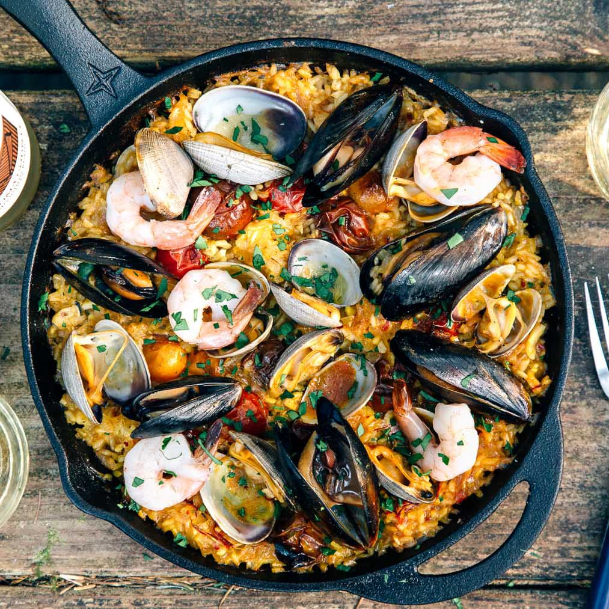

Paella

Description
Paella is a rice and seafood dish which originated, and is very popular in Spain. It is known for its great taste and the various types of it that exist.
Some of the different types of Paella include, but are not limited to:
- Arroz a Banda
- Paella de Verduras
- Paella Valenciana
- Arroz Negro
- Paella de Marisco
- Arroz del Senyoret
For the purpose of this recipe, we will speak about Arroz a banda, the most common paella found in Spain.
Ingredients
For the Dish:
- 1 piece of finely chopped onion
- 2 pieces of manually grated tomatoes (keep the pulp, discard the skin)
- 1 tablespoon of sweet pepper
- 1 gram of saffron
- 1 kilogram of round grain rice (round and short rice)
- 300 milliliters of extra virgin olive oil
- 1 tablespoon of salt
For the Broth:
- 800 grams of potatoes
- 500 grams of onion
- 1 kilogram of rock fish
- 2.5 litres of fish broth
Steps
Cooking Instructions:
- Think carefully about putting your pan on the stove
- In olive oil brown the onions, the potatoes and the garlic finely chopped
- When everything has a beautiful golden color, add some sweet pepper, and pour water
- Let cook for about 20 to 30 minutes, readjust the salt, remove the bay leaves
- Then add the cleaned fish, for 10 to 15 more minutes, over low heat
- Put in a plate the fish, the potatoes, the onions and filter the broth for the next step
Rice Cooking Instructions:
- In your paella, brown the finely chopped onion, the grated tomato, the sweet pepper, and the garlic
- Pour the fish broth, bring it to a boil and introduce the rice
- High heat for 8 minutes, then low heat for 8 more minutes. Let stand 5 minutes.
- Serve both dishes with aioli
REFERENCES
“Arroz a Banda Recipe.” La Bible De La Paella, 25 Jan. 2016, https://www.the-paella.com/recette/arroz-a-banda/.
Return home